Introduction to R
Exercises
These exercises yield a quick introduction of basic data wrangling, pipes and visualization in R.
The following packages are required for this practical:
library(dplyr) # For data wrangling
library(magrittr) # For pipes
library(mice) # For the boys data
library(ggplot2) # Plotting deviceand if you’d like the same results as I have obtained, you can fix the random seed
set.seed(123)Exercise 1
- Use a pipe to do the following:
- draw 1000 values from a normal distribution with
mean = 5andsd = 1- \(N(5, 1)\), - create a matrix where the first 500 values are the first column and the second 500 values are the second column **
- make a scatterplot of these two columns
rnorm(1000, 5) %>%
matrix(ncol = 2) %>%
plot()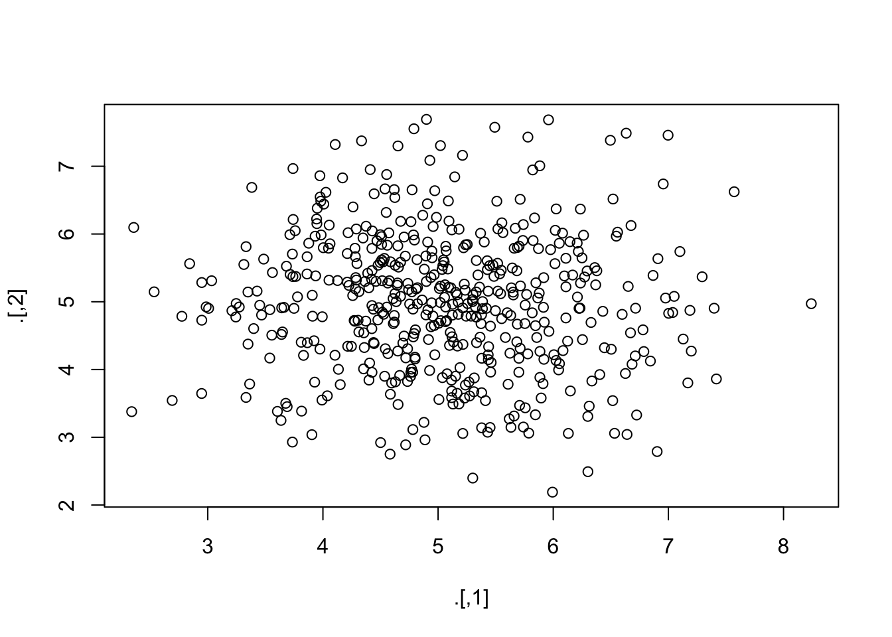
Exercise 2
- Use a pipe to calculate the correlation matrix on the
anscombedata set
anscombe %>%
cor()## x1 x2 x3 x4 y1 y2 y3
## x1 1.0000000 1.0000000 1.0000000 -0.5000000 0.8164205 0.8162365 0.8162867
## x2 1.0000000 1.0000000 1.0000000 -0.5000000 0.8164205 0.8162365 0.8162867
## x3 1.0000000 1.0000000 1.0000000 -0.5000000 0.8164205 0.8162365 0.8162867
## x4 -0.5000000 -0.5000000 -0.5000000 1.0000000 -0.5290927 -0.7184365 -0.3446610
## y1 0.8164205 0.8164205 0.8164205 -0.5290927 1.0000000 0.7500054 0.4687167
## y2 0.8162365 0.8162365 0.8162365 -0.7184365 0.7500054 1.0000000 0.5879193
## y3 0.8162867 0.8162867 0.8162867 -0.3446610 0.4687167 0.5879193 1.0000000
## y4 -0.3140467 -0.3140467 -0.3140467 0.8165214 -0.4891162 -0.4780949 -0.1554718
## y4
## x1 -0.3140467
## x2 -0.3140467
## x3 -0.3140467
## x4 0.8165214
## y1 -0.4891162
## y2 -0.4780949
## y3 -0.1554718
## y4 1.0000000Exercise 3
- Now use a pipe to calculate the correlation for the pair (
x4,y4) on theanscombedata set
Using the standard %>% pipe:
anscombe %>%
subset(select = c(x4, y4)) %>%
cor()## x4 y4
## x4 1.0000000 0.8165214
## y4 0.8165214 1.0000000Alternatively, we can use the %$% pipe from package magrittr to make this process much more efficient.
anscombe %$%
cor(x4, y4)## [1] 0.8165214Exercise 4
- Use a pipe to calculate the correlation between
hgtandwgtin theboysdata set from packagemice.
Because boys has missings values for almost all variables, we must first select wgt and hgt and then omit the rows that have missing values, before we can calculate the correlation. Using the standard %>% pipe, this would look like:
boys %>%
subset(select = c("wgt", "hgt")) %>%
cor(use = "pairwise.complete.obs")## wgt hgt
## wgt 1.0000000 0.9428906
## hgt 0.9428906 1.0000000which is equivalent to
boys %>%
subset(select = c("wgt", "hgt")) %>%
na.omit() %>%
cor()## wgt hgt
## wgt 1.0000000 0.9428906
## hgt 0.9428906 1.0000000Alternatively, we can use the %$% pipe:
boys %$%
cor(hgt, wgt, use = "pairwise.complete.obs")## [1] 0.9428906The %$% pipe exposes the listed dimensions of the boys dataset, such that we can refer to them directly.
Exercise 5
- Create a histogram for
agein theboysdata set
With the standard plotting device in R:
boys %$%
hist(age, breaks = 50)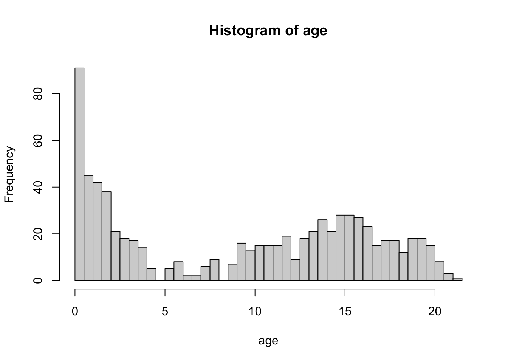
The breaks = 50 overrides the default breaks between the bars. By default the plot would be
boys %$%
hist(age)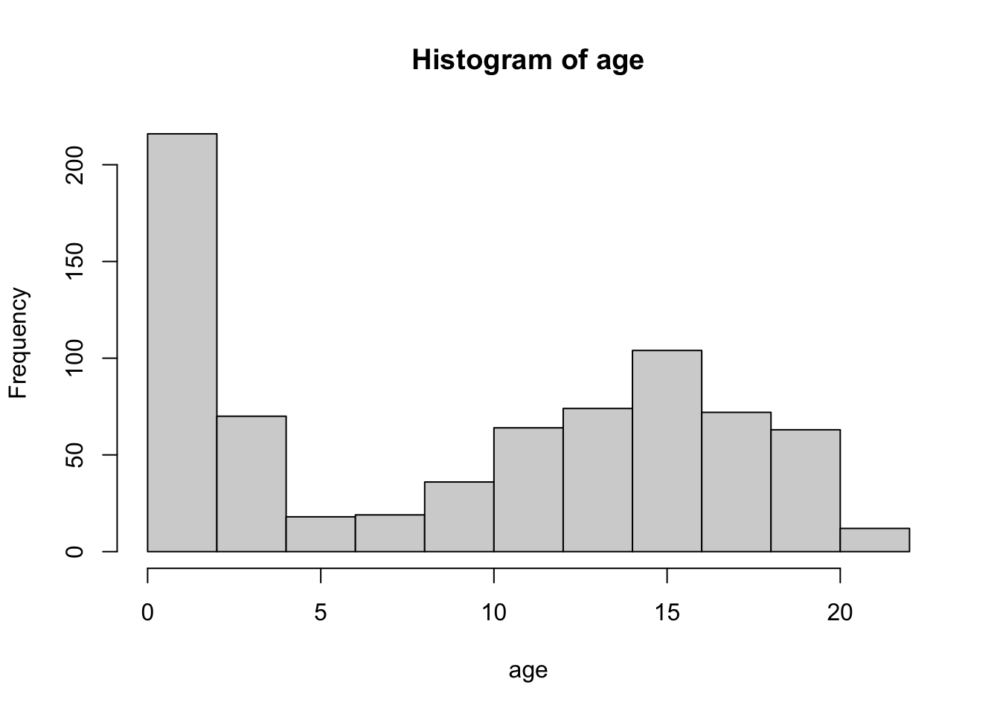 Using a pipe is a nice approach for this plot because it inherits the names of the objects we aim to plot. Without the pipe we might need to adjust the main title for the histogram:
hist(boys$age, breaks = 50)With ggplot2:
boys %>%
ggplot() +
geom_histogram(aes(age), binwidth = .4)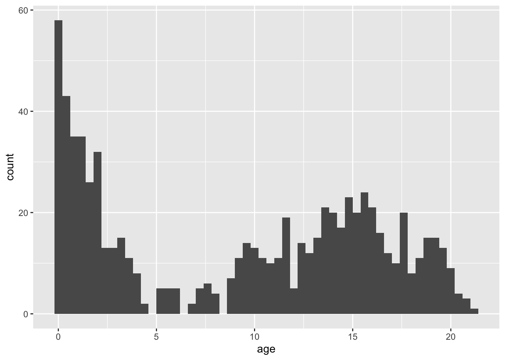
Please note that the plots from geom_histogram() and hist use different calculations for the bars (bins) and hence may look slightly different.
Exercise 6
- Create a bar chart for
regin the boys data set With a standard plotting device inR:
boys %$%
table(reg) %>%
barplot()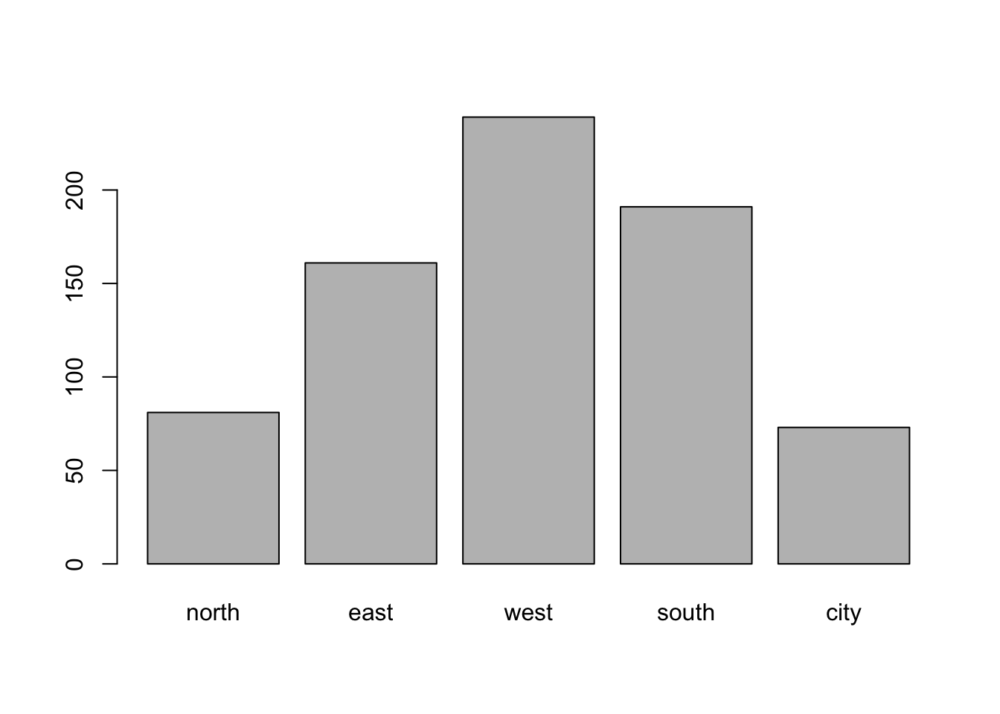
With ggplot2:
boys %>%
ggplot() +
geom_bar(aes(reg))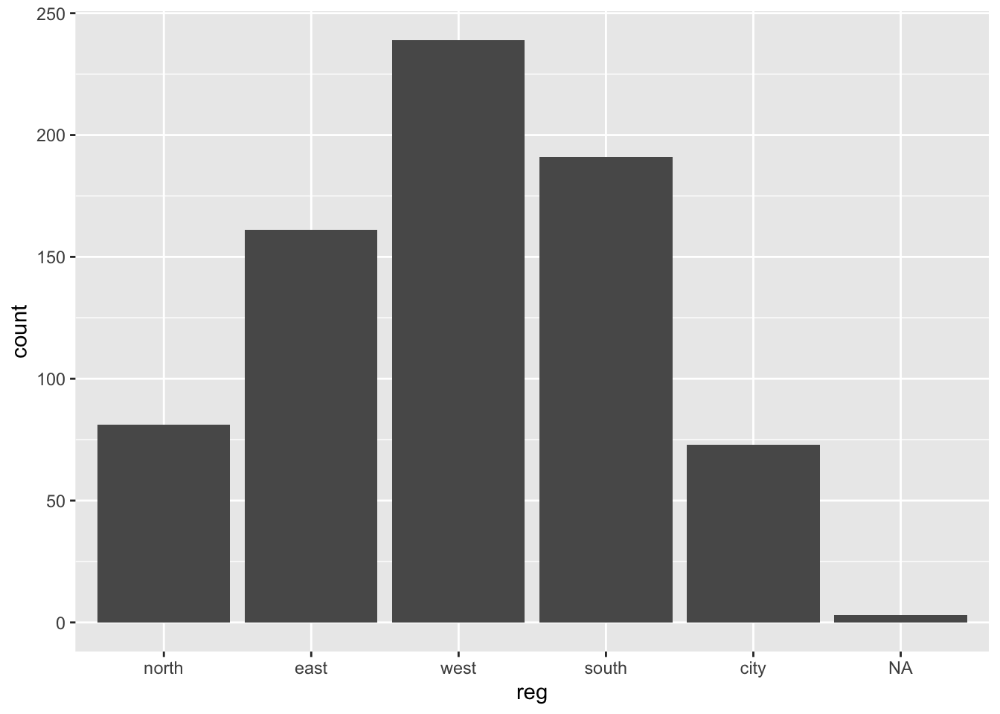
Note that geom_bar by default plots the NA’s, while barplot() omits the NA’s without warning. If we would not like to plot the NAs, then a simple filter() (see exercise 2) on the boys data is efficient.
Exercise 7
- Create a box plot for
hgtwith different boxes forregin theboysdata set With a standard plotting device inR:
boys %$%
boxplot(hgt ~ reg)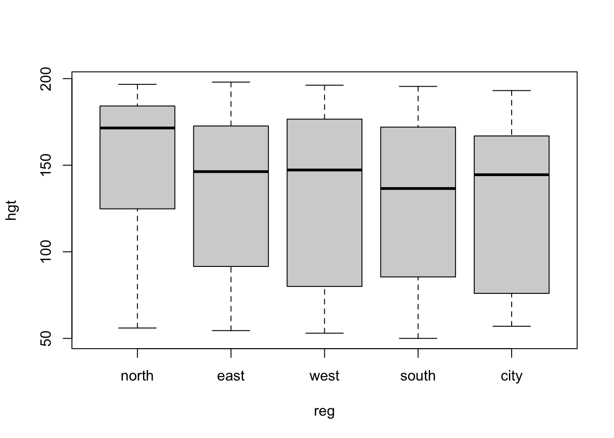
With ggplot2:
boys %>%
ggplot(aes(reg, hgt)) +
geom_boxplot()## Warning: Removed 20 rows containing non-finite values (stat_boxplot).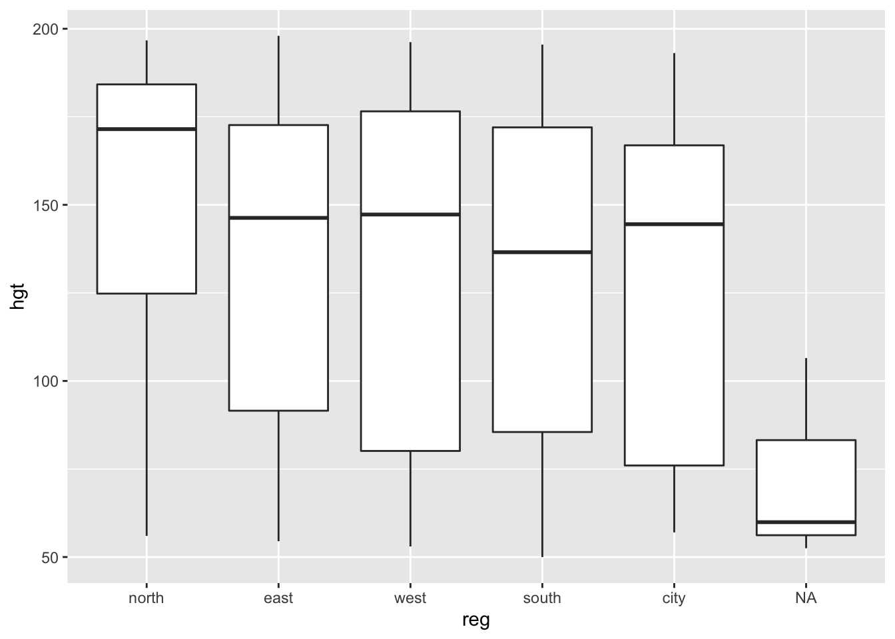
Extra exercises
Exercise 8
- In the
boysdata set,hgtis recorded in centimeters. Use a pipe to transformhgtin theboysdataset to height in meters and verify the transformation
Using the standard %>% and the %$% pipes:
boys %>%
transform(hgt = hgt / 100) %$%
mean(hgt, na.rm = TRUE)## [1] 1.321518Exercise 9
- Use a pipe to plot the pair (
hgt,wgt) two times: once forhgtin meters and once forhgtin centimeters. Make the points in the ‘centimeter’ plotredand in the ‘meter’ plotblue.
This is best done with the %T>% pipe:
boys %>%
subset(select = c(hgt, wgt)) %T>%
plot(col = "red", main = "Height in centimeters") %>%
transform(hgt = hgt / 100) %>%
plot(col = "blue", main = "Height in meters")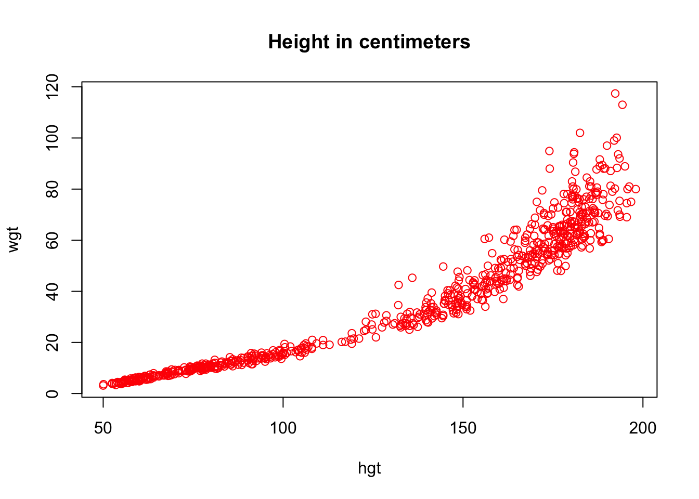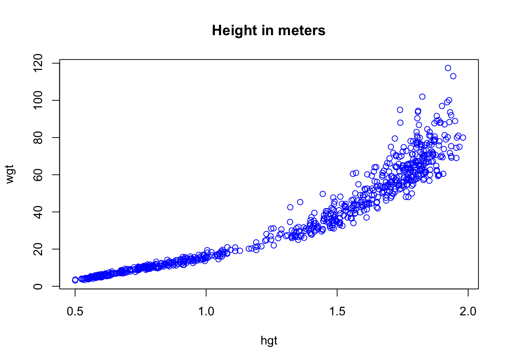
The %T>% pipe is very useful, because it creates a literal T junction in the pipe. It is perhaps most informative to graphically represent the above pipe as follows:
boys %>%
subset(select = c(hgt, wgt)) %T>%
plot(col = "red", main = "Height in centimeters") %>%
transform(hgt = hgt / 100) %>%
plot(col = "blue", main = "Height in meters")
We can see that there is indeed a literal T-junction. Naturally, we can expand this process with more %T>% pipes. However, once a pipe gets too long or too complicated, it is perhaps more useful to cut the piped problem into smaller, manageable pieces.
Exercise 10
- Create a density plot for
agewith different curves for boys from thecityand boys from rural areas (!city). With a standard plotting device inR:
d1 <- boys %>%
subset(reg == "city") %$%
density(age)
d2 <- boys %>%
subset(reg != "city") %$%
density(age)
plot(d1, col = "red", ylim = c(0, .08))
lines(d2, col = "blue") 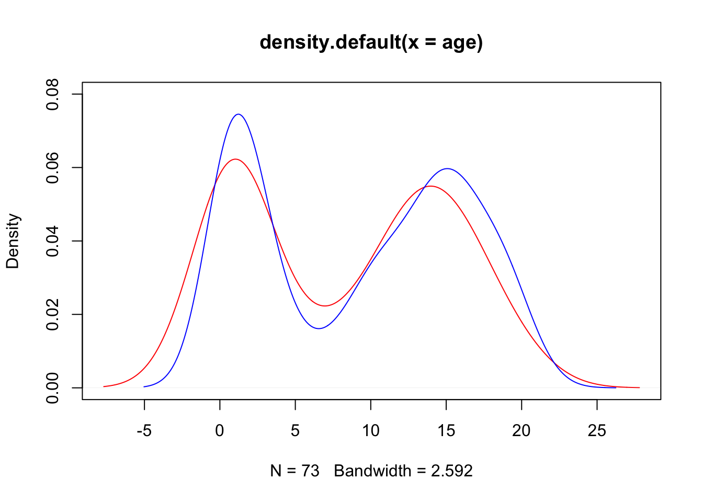
The above plot can also be generated without pipes, but results in an ugly main title. You may edit the title via the main argument in the plot() function.
plot(density(boys$age[!is.na(boys$reg) & boys$reg == "city"]),
col = "red",
ylim = c(0, .08))
lines(density(boys$age[!is.na(boys$reg) & boys$reg != "city"]),
col = "blue")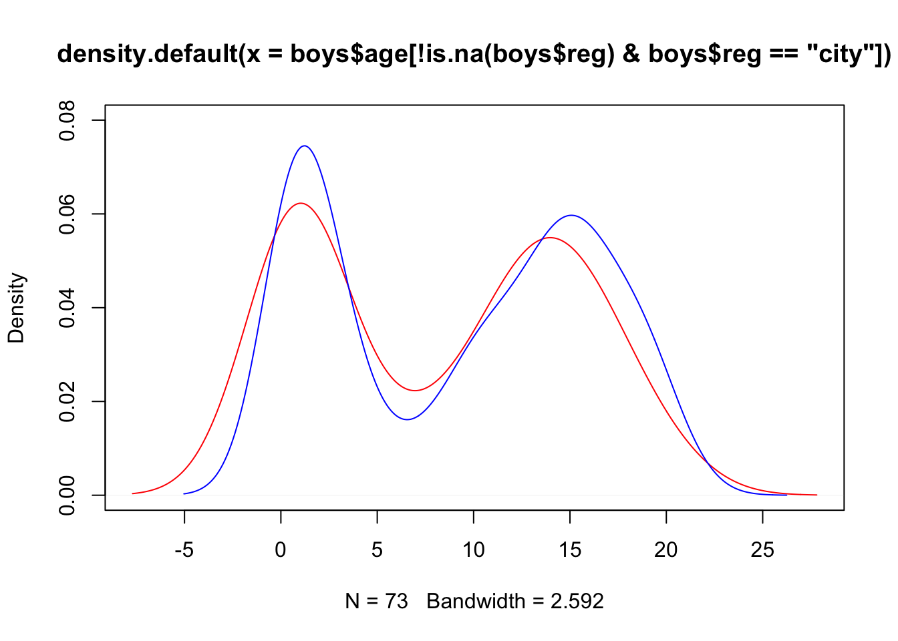
With ggplot2 everything looks much nicer:
boys %>%
mutate(area = ifelse(reg == "city", "city", "rural")) %>%
filter(!is.na(area)) %>%
ggplot(aes(age, fill = area)) +
geom_density(alpha = .3) # some transparency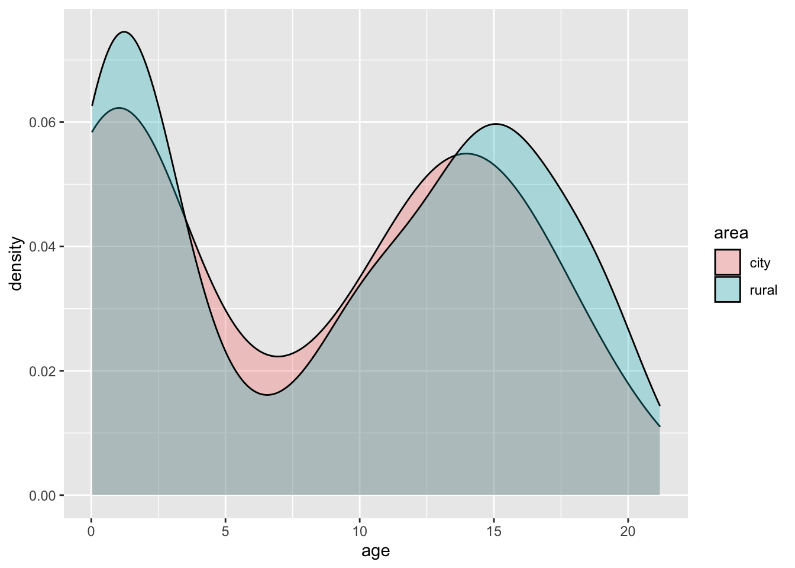
Exercise 11
- Create a diverging bar chart for
hgtin theboysdata set, that displays for everyageyear that year’s mean height in deviations from the overall averagehgt
Let’s not make things too complicated and just focus on ggplot2:
boys %>%
mutate(Hgt = hgt - mean(hgt, na.rm = TRUE),
Age = cut(age, 0:22, labels = 0:21)) %>%
group_by(Age) %>%
summarize(Hgt = mean(Hgt, na.rm = TRUE)) %>%
mutate(Diff = cut(Hgt, c(-Inf, 0, Inf),
labels = c("Below Average", "Above Average"))) %>%
ggplot(aes(x = Age, y = Hgt, fill = Diff)) +
geom_bar(stat = "identity") +
coord_flip()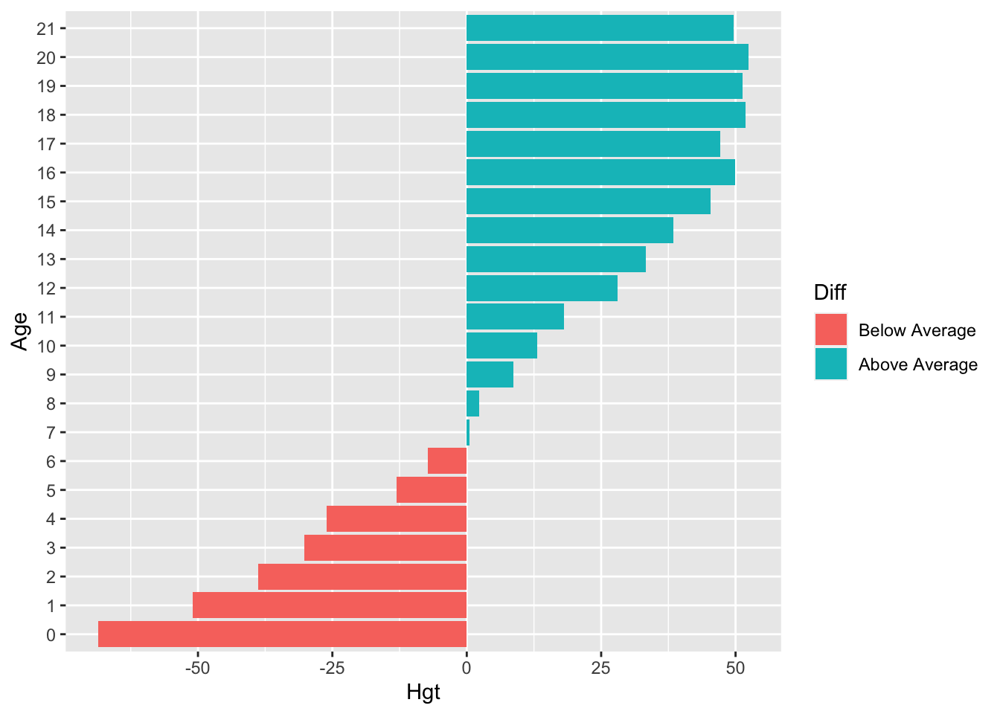
We can clearly see that the average height in the group is reached just before age 7.
The group_by() and summarize() function are advanced dplyr functions used to return the mean() of deviation Hgt for every group in Age. For example, if we would like the mean and sd of height hgt for every region reg in the boys data, we could call:
boys %>%
group_by(reg) %>%
summarize(mean_hgt = mean(hgt, na.rm = TRUE),
sd_hgt = sd(hgt, na.rm = TRUE))## # A tibble: 6 × 3
## reg mean_hgt sd_hgt
## <fct> <dbl> <dbl>
## 1 north 152. 43.8
## 2 east 134. 43.2
## 3 west 130. 48.0
## 4 south 128. 46.3
## 5 city 126. 46.9
## 6 <NA> 73.0 29.3The na.rm argument ensures that the mean and sd of only the observed values in each category are used.
Exercise 12
- Use a pipe to assign values
1:5to objectxand verify that the object exists.
Normally, when we use the following code to assign values to an object, we can directly run the assign operator <- as
x <- 1:5However, when we would like to do this in a pipe, we need to run the assign() function. However, we then would run into the following problem.
"x" %>% assign(1:5)
x## Error in eval(expr, envir, enclos): object 'x' not foundThe pipe creates a separate, temporary environment where all things %>% take place (environments were discussed in Lecture C). This environment is different from the Global Environment and disappears once the pipe is finished. In other words, we assign 1:5 to object x, but once we are done assigning, object x is deleted.
Function assign() is part of a class of functions that uses the current environment (the one that it is called from) to do its business. For such functions, we need to be explicit about the environment we would like the funtion to use:
env <- environment()
"x" %>% assign(1:5, envir = env)
x## [1] 1 2 3 4 5Now we have explicitly instructed function assign() to use the Global Environment:
environment()## <environment: R_GlobalEnv>We could also create a new environment to assign values to objects
assign.env <- new.env()
"x" %>% assign(letters[1:5], envir = assign.env)But then we need to call x from assign.env
assign.env$x## [1] "a" "b" "c" "d" "e"because otherwise we would still get x from R_GlobalEnv
x## [1] 1 2 3 4 5Bottom line: Don’t use the pipe to assign something to new objects!
End of Practical